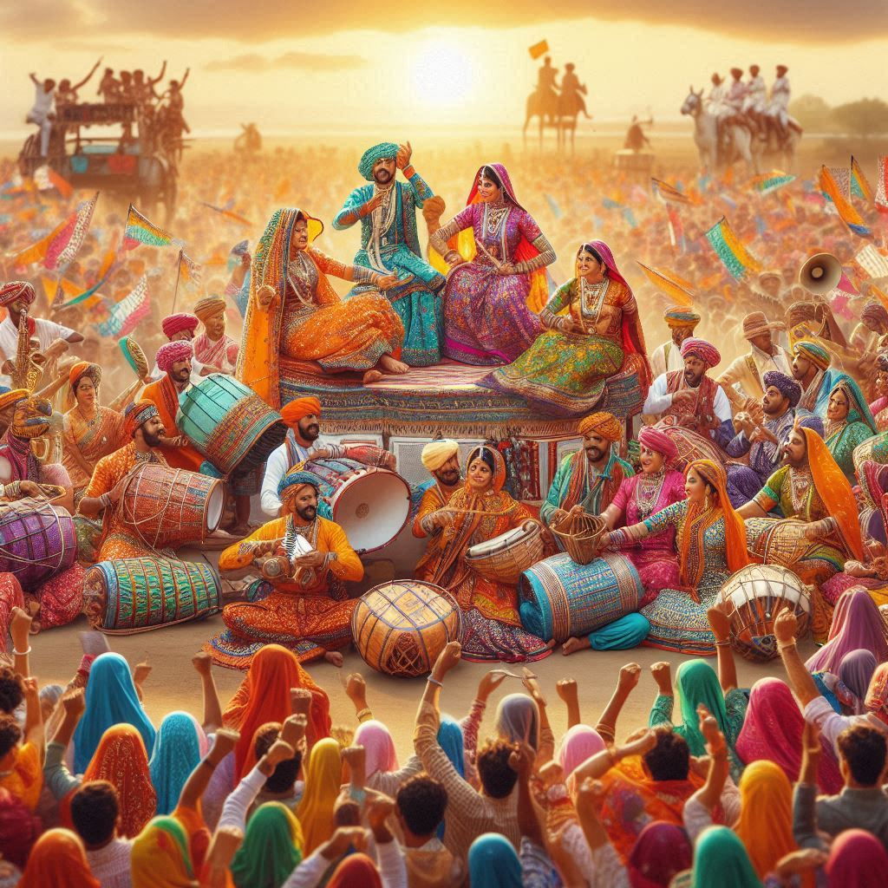
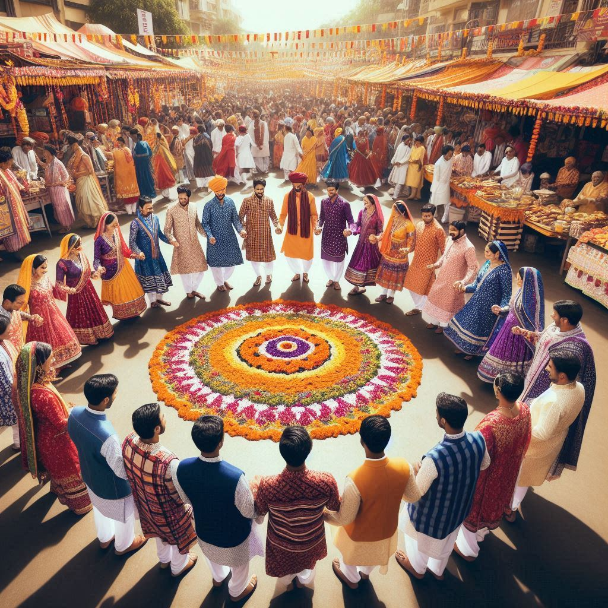

The traditions of Gujarat reflect its vibrant and diverse cultural heritage, showcasing a blend of
customs, rituals, art, and everyday practices that have evolved over centuries. Known for its colorful
festivals, folk dances, rich cuisine, and intricate craftsmanship, the traditions of Gujarat offer a
glimpse into the soul of the state. Here’s an overview of some key aspects:
1. Festivals and Celebrations
- Navratri: One of the most iconic traditions of Gujarat is the nine-day
celebration of Navratri, marked by vibrant Garba and
Dandiya Raas dances. Devotees worship the goddess Durga, and communities come
together in colorful traditional attire, singing, dancing, and celebrating with unmatched
energy.
- Uttarayan (Kite Festival): Celebrated on January 14th every year, the skies of
Gujarat are filled with colorful kites as people participate in kite flying
competitions and enjoy traditional sweets like chikki and
undhiyu.
- Janmashtami: The birth of Lord Krishna is celebrated with great devotion and
enthusiasm, especially in Dwarka and Gokul. The 'Dahi
Handi' tradition of breaking pots filled with curd symbolizes Krishna's childhood
antics.
- Diwali: Like the rest of India, Diwali is celebrated with joy, decorated homes,
lighting of diyas (oil lamps), bursting of firecrackers, and exchanging sweets.
2. Folk Dances and Music
- Garba and Dandiya Raas: Garba is a devotional dance performed around an earthen
lamp or idol of the Goddess Shakti, while Dandiya Raas involves energetic
movements with decorated sticks. These dances are a major highlight during Navratri.
- Bhavai: This is a traditional folk theater form involving storytelling, satire,
and humor. Performers dress elaborately, and the performances often reflect social issues and
moral values.
- Sugam Sangeet and Folk Songs: Bhajans, Raas,
and Kirtans are popular, reflecting the state's religious and cultural ethos.
Dayro and Lokvarta are oral storytelling traditions often
accompanied by folk music.
3. Clothing and Attire
- Traditional Dress: The traditional dress of Gujarati men includes
Kediyu (a short frock-like kurta) and Dhoti or
Chorno. Women wear Chaniya Choli, a colorful three-piece
attire with intricate embroidery and mirror work, often paired with a dupatta
or odhani.
- Patola and Bandhani: Patola sarees from Patan
and Bandhani (tie-dye) fabrics are cherished for their vibrant colors and
intricate patterns.
4. Arts and Crafts
- Block Printing and Embroidery: Gujarat is known for its detailed embroidery
styles such as Aari, Kutch embroidery, and
Rabari work. Ajrakh block printing, mirror
work, and beadwork are also common.
- Wood Carving and Pottery: The wood carving tradition in
Gujarat is reflected in beautifully carved temple structures, furniture, and household items.
Clay pottery and terracotta crafts are practiced by artisans across the state.
5. Religious Practices and Beliefs
- Hinduism, Jainism, and Islam are widely practiced in Gujarat,
and the state is dotted with temples, mosques, and Jain Derasars (temples). Important religious
centers include Somnath Temple, Dwarkadhish Temple, Palitana Jain Temples, and
Sidi Saiyyed Mosque.
- Fasting and Piety: Fasting holds spiritual significance, with various fasts
observed by men and women throughout the year. Paryushan is a significant Jain
festival involving days of fasting, prayers, and introspection.


6. Traditional Cuisine
- Vegetarian Cuisine: Gujarat’s cuisine is largely vegetarian and features sweet,
salty, and spicy flavors. Dishes like Dhokla, Thepla, Fafda, Khandvi, and
Undhiyu are popular, reflecting the culinary diversity of the state.
- Sweets and Snacks: Sweets like Jalebi, Basundi,
Shrikhand, and snacks like Khakra and Sev form a
major part of the Gujarati tradition of hospitality.
7. Wedding Traditions
- Gujarati weddings are colorful and involve several pre-wedding, wedding, and
post-wedding rituals, reflecting the region’s traditions and values. Ceremonies like
'Pithi' (applying turmeric paste) and 'Kanyadaan' (giving away
the bride) are significant.
- Community Meals (Sanjha Bhojan): Large community meals are a common feature of
social gatherings and weddings, reflecting communal harmony.
8. Language and Literature
- Gujarati Language: The Gujarati language, with its distinct script and literary
heritage, forms the backbone of traditional culture. Ancient and modern literary works, poetry,
and folk stories highlight the essence of Gujarat's traditions.
9. Social Traditions
- Hospitality: Gujarat is known for its warm hospitality and generosity. Guests
are considered equivalent to God (‘Atithi Devo Bhava’).
- Fairs and Melas: Traditional fairs like the Tarnetar Mela and
Vautha Fair offer insights into rural Gujarat, showcasing folk art,
handicrafts, and cultural programs.
Conclusion
The traditions of Gujarat represent the confluence of ancient practices, regional customs, and the
modern spirit of adaptation. Deeply rooted in religious values, community gatherings, music, dance,
and a love for color and celebration, Gujarat’s traditions continue to captivate and inspire
visitors from around the world.